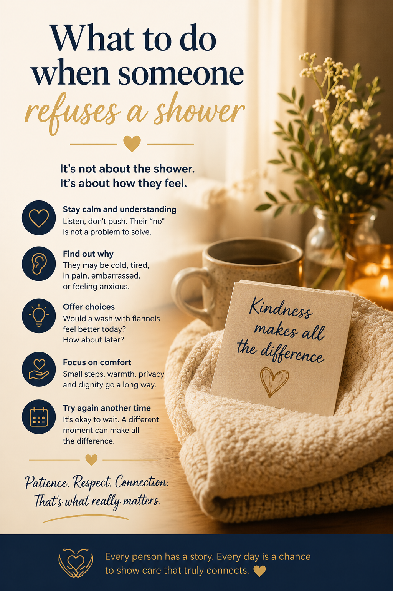

It's not about the shower. It's about how they feel.

Maria knocked gently and opened the bathroom door. "Ready for your shower, Joan?"
"No. Not today." Joan's arms crossed, her voice sharp, her eyes fixed somewhere past Maria's shoulder.
It wasn't the first time. Some mornings Joan agreed without a second thought. Other mornings, like this one, the answer came fast and final — and pushing only made it worse.
Maria didn't argue. She sat down instead, level with Joan, and opened WithYou's Quick Help Guide under "Refusing Personal Care." A few calm reminders, ones she half-knew already but needed to hear again: this isn't defiance, it's usually fear, cold, discomfort, or simply not feeling ready. The "no" isn't a problem to solve — it's information.
"Would a wash with the flannel feel better this morning, Joan? Or we could try again after breakfast?"
Joan's shoulders dropped, just slightly. "After breakfast."
They didn't get to the shower until nearly eleven. But they got there — warm, unhurried, on Joan's terms. Maria has learned that dignity matters more than the clock. A shower delayed by two hours is nothing. A trust broken by force can take weeks to rebuild.
WithYou's Quick Help Guide covers the moments carers dread most — with calm, practical guidance for each one.
Try WithYou